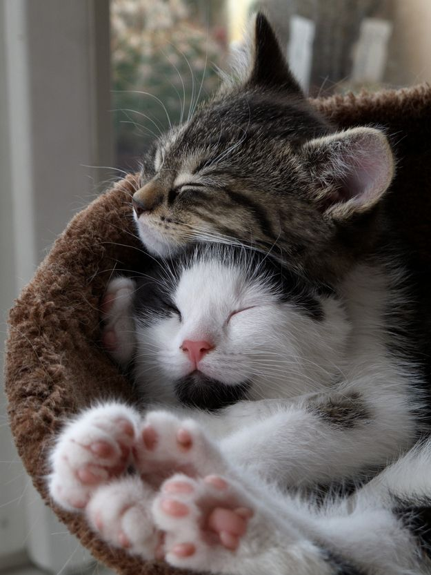

Kétféle ember van. Cicás, és kutyás. Ez a weboldal most inkább a macskás embereknek fog szólni.
Én személyszerint macskás vagyok, a kutyák véleményem szerint zavaróbbak, és egy macskát jobban elviselek a társaságomba.
A következő okok miatt:
Lehet őket szeretgetniHogy ha hajlandó eltűrni..
MegnyugtatnakHa este van akkor kell egy füldugó..
Nem kell őket levinni mint a kutyákat.Helyette almot kell lapátolni..a büdös lakásban.
Általában csak alszanak, nem zavarnak sok vizet.Kivéve ha éppen játszik, akkor törik mindent..
A macskáknak vannak jó és rossz oldalaik is, azonban kompromisszumokat kell kötni a kutya és a macskatartás mellet is. Inkább arról,
szól hogy melyiket hajlandó az ember elviselni és azzal együtt élni.
Rengeteg kóbor macska és kutya van odakint, és mindegyikük gazdit keress éppen. Ez igazán elszomorító, ha én a macskákat nem szeretném akkor ha más nem egy kutyát biztosan befogadnék ha megtehetném.'hint'..'hint..'
A macskák sajnos igazán zajosak esténként, és ha nyitva hagyjuk a szobánk ajtaját akkor még meg is őrülnek általában és borzos farokkal rohangálnak fel-alá, miközben azt sem tudjuk eldönteni hogy éppen nyávog vagy éppen csak nyervog.
A macskákról sokan mondják, hogy, egyedüli lény. Azonban, senki sem szeretne egyedül leélni 12 évet egy bezárt lakásban,
ezt most a macska perspektívájából gondolom. Ugyanis, ha van mellete egy másik fajtárs is akkor biztosan jobban fogja magát érezni. Eleinte tutira biztos hogy lesznek veszekedések a területekért, azonban 1 hét múlva már rájuk sem lehet ismerni mert összenőttek.

← Pont így. Az, hogy a macska nem társas lény az egy tévhit.
Ha egy fiatalabb fiú cicát hozol haza a már idősebb lány cicához, akkor pedig arra is van esély hogy a lány cica befogadja őt a fiaként. Nálunk pont ez történt, azt sem tudtuk hogy egyáltalán mi történhetet. 3 nappal ezelőtt még tépték marták egymást majd később már egymás mellet aludtak, tisztogatták egymást.
A macskák nagyon meglepőek tudnak lenni, akár még rejtélyesnek is hívnám őket.
Mikor nyávognak és kérnek ennivalót, van mikor otthagyják.
Mikor dörgölöznek a tárgyakhoz, azt olyan élvezettel csinálják
Mikor megharapnak téged simogatás közben...
Mikor lelapul mielőtt meglehetne simogatni őket..
Mikor a füleikkel olyan mintha jeleket adnának le..
Sok, sok mindent le fogok írni ezen az oldalon most ezekről.
- 'Eredetük
- 'Tartásuk
- 'A fenti okok magyarázata
- 'Ahány macskaféle, annyi személyiség.